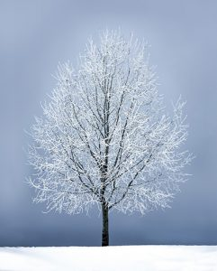

Although winters in Ocean and Monmouth Counties can be mild, this season can be very taxing on trees. While coniferous trees seem to thrive in this weather, deciduous trees have a much more difficult time. Evergreen trees have needles which are much better at retaining water compared to the thin, papery leaves of deciduous trees. This is why evergreens retain their needles during the winter and others drop their leaves in order to go into dormancy. During this passive-state, the trunk is the number one defense mechanism a tree has. While effective, trunks can’t protect trees from everything. Winter can do some severe damage to trees, but expert tree service in Ocean County from Ben Bivins Tree Experts helps support trees all times of the year.
Snow and Ice Add Weight
With winter comes heavy precipitation. Not heavy in terms amount only, but also in regards to the weight of it. Snow and ice can add a considerable amount of weight to defenseless trees in the winter. Even smaller trees that are protected by a canopy of leaves during spring and summer are exposed to this danger. The added weight can easily snap limbs and branches on the low end of the damage spectrum, but can also uproot trees in the worst cases. This is why our pruning and trimming services are so important. We expertly remove damaged, dead, or otherwise at-risk limbs leaving only the strongest branches. We also do not stress the tree out by removing too many limbs at once or taking too many from one side. If your trees could use some TLC, give us a call today for tree service in Ocean County.
Sunscald is Not a Summer Concern
Sunscald sounds like something that would happen to trees during summer, but this is actually a winter concern. Younger trees and trees with thin bark are more susceptible to sunscald, but all trees are at risk of this type of damage. You have most likely seen a sunscald scar on a tree without realizing it. This happens on sun-facing sides of trunks whose temperatures can be in excess of 20° higher than the surrounding air temperature. Cells that should be dormant during winter turn on in the sunshine, but become damaged when temperatures drop at night. This results in darkened bark, cracks, calloused areas, and cankers. Trees that suffer sunscald often show the result of the stress with meager foliage and reduced growth overall.
Winter Weather Affects all Parts of a Tree

From the top of the canopy to the end of the root system, all parts of a tree are affected by the extreme weather of winter. High winds, heavy precipitation, and freezing temperatures can greatly impact trees resulting in heavy damage or even death. Trees actually lose moisture faster than they can intake it during winter even in a heavy snow fall. Dry branches are most likely to break and fall during winter storms. Have a professional assess your trees every fall to determine if any limbs should be removed prior to the stress of winter.
Roots really don’t like the cold. When soil temperatures drop under freezing, injury and death are not only possible, but likely. The best way to protect roots from this is to insulate the soil around trees. Mulch is great at this when applied correctly. The “Leave the Leaves” movement is also great for trees because leaf litter is an excellent insulator. Even snow coverage works to protect roots in this way.
Prevent Excessive Damage with Expert Tree Service in Ocean County
Expert tree service in Ocean County is just one way to help prevent major tree damage during winter. Keeping trees well-pruned, properly mulched, and treated for insects and diseases as needed gives trees a fighting chance at surviving the harsh weather of winter. Spring and fall are the best seasons to perform stressful services like limb removal. We also provide emergency tree services. If you find yourself in this worst-case scenario this winter, give us a call. Don’t let just anyone take care of your trees, contact Ben Bivins Tree Experts for experienced, professional tree service in Ocean County.